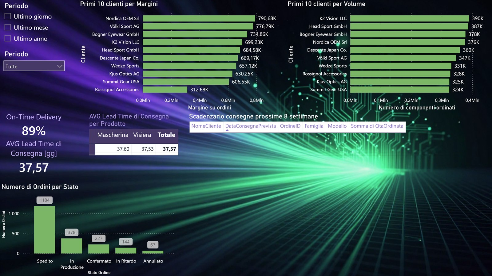

See in one minute how the year is going
ManagementRevenue against target, margin by product family, seasonality and markets. When a figure looks wrong, you open the detail instead of asking for a new file.
A production meeting should start from decisions, not from hunting for the right figures. This report brings revenue, OEE, downtime and deliveries onto a single source that everyone reads the same way.
Production, order and client KPIs in a single dashboard, for a fictitious mechanical SME with about 50 employees.

Fictitious values read from the report. All data and client names in the report are fictitious and do not describe real business relationships.
Three pages, one question for each chart. Press Next or click the picture: the report zooms in on the right spot and explains what you can do with it.


How is the year going, in one minute?
Start here: key figures on the left, when you sell in the centre, where you sell and who buys on the right. The buttons lead to the other two pages.
Are we on target?
Revenue, target, gross margin and orders confirmed, in the pipeline and in production sit in one column, always updated on the chosen filter.
How much does the high season weigh?
Compare high, low and off season, and pick the season to look at above: useful to prepare capacity and materials ahead of time.
In which countries do we sell?
Each colour is a country. A click on the map filters the whole page on that market.
Who does revenue depend on?
Clients in order of weight: you see at once if a few names carry much of the year.
How do I switch view without redoing the filters?
Italy, Europe, America or no filter: one click and the whole page realigns. Handy in a meeting, moving from one market to another.
Where does the factory stop?
One look at pieces produced, OEE, downtime causes and comparison with the plan, for each line and each period.
How do I look at a single line?
Pick a line, period or fault cause: all the charts on the page update together.
How much are we really producing?
Pieces produced, average OEE and deviation from plan on top, then throughput by technology and product family.
Why did the machines stop?
Downtime minutes split by cause and line: you see where to act first, instead of arguing from memory.
Does production follow the plan?
Planned and actual side by side. The chart goes down from year to quarter, month and day to find when the gap began.
Which line performs best?
Lines in order of OEE: a simple ranking to decide where to look first.
What to deliver, and to whom?
Margins and volumes by client, delivery punctuality, lead time and the status of each order on the same page.
Who brings margin and who brings volume?
Two rankings side by side: the clients who order most are not always those who bring the most.
Are we delivering on time?
Share of on-time deliveries and average lead time by product family: the figures to have in front of you before promising a date.
How many orders are late?
Shipped, in production, confirmed, late and cancelled: you see at once how many need attention.
The same fictitious data as the report, recalculated here in the browser. Pick a year, click a line and watch OEE, production and downtime change: this is how you question a dashboard.
Main downtime cause: –. Line with the highest OEE: –.
The same source serves different questions. Each role finds its page and stops waiting for an extract.
Revenue against target, margin by product family, seasonality and markets. When a figure looks wrong, you open the detail instead of asking for a new file.
OEE by line, downtime minutes by cause and comparison with the plan. The morning meeting starts from what happened yesterday, not from who has the latest figure.
Order status, on-time deliveries and lead time by family. Before giving a client a date, you check what the data says.
Season, period, line, downtime cause: one click and all charts realign.
Plan and actual, margin and volume, one line with another, on the same page.
From year to quarter, month and day, down to the moment the figure changed.
Bookmarks by market ready to open in a meeting, without redoing the filters.
Nothing magic: tidy tables, linked once, and measures calculated the same way for everyone. When the data updates, every page updates.
Management, production and orders read the same figures, each from their own point of view.
A single source changes how people work even before the figures do: less time preparing data, more time deciding. Flip the switch and compare the two situations.
Before Every production meeting starts from different extracts, to be aligned by hand.
After Every production meeting starts from the same KPIs, read from the same dashboard.
Before Every monthly report is rebuilt by copying data from several files.
After Every monthly report updates from the same sources, without copying data.
Before Every question about a figure needs a new extract.
After Every question about a figure starts from a filter on the same page.
Use case with fictitious data. The benefits described are possible, not results achieved with a client.